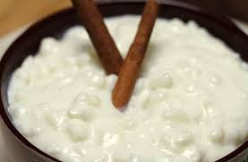

Receita de canjica ou Mungunzá

Ingredientes
- 1/2 pacote de milho para canjica
- 1 litro de leite
- 2 Litros de água
- 1 Lata de leite condesado
- Pedaços de canela em pau
- Mais ou menos 5 cravos
Modo de preparo
Em um pote deixe 1/2 pacote de milho de molho por duas horas.
Coloque o milho em uma panela de pressão com 2 Litros de águae deixe cozinhar por duas horas.
Abra a panela e se o milho estiver mole está cozido, se ainda estiver duro deixe cozinhar mais um pouco.
Depois de cozido ainda na panela coloque o leite condensado, o leite, a canela e o cravo, deixe cozinhar por mais 10 minutos.
Pontinho! o Mungunzá fica uma delícia com pedacinhos de coco dentro.